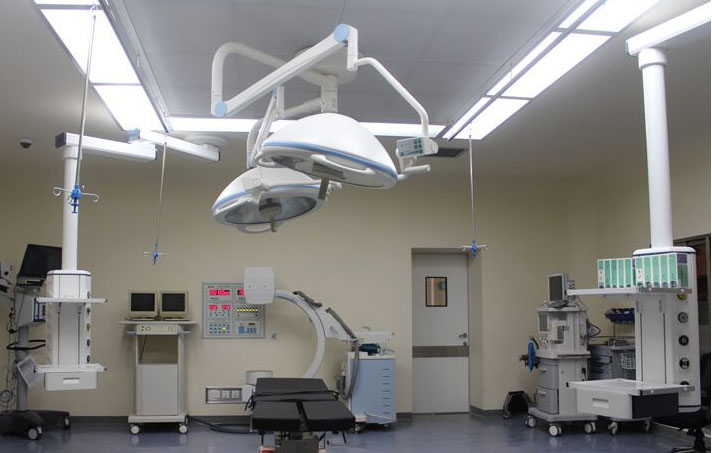

2017年11月9日周杰伦
新闻来源：白城市社会医疗稳妥管理局
2017年04月12日白城市医保局急诊疾病审阅确定小组根据<<吉林省医疗生孩子稳妥急诊存案挂号疾病规模>>吉医保办字<<2014>> 33号文件规则，对近期参保病人申报的急诊疾病住院材料进行了审阅确定，现将确定成果予以布告：
审阅确定经过人员名单：
盖淑兰 张利华 苏子语 朱文国 姜凤英 王大辉 王雅贤 姜南宇 尹凯平 张凤岭
审阅经过人员，于布告之日起10个工作日内带着以下有关材料到医保局二楼12号窗口请求报销：1、住院收据；2、用药明细；3、本 市农业银行折或卡（须病人自己）复印件；4、自己身份证复印件，第3、4项复印到一张A4纸上；5、如代理人经办须代理人身份证原件 及复印件。
11111111111111111111111111111111111111111111111111111111 1111111111111111111111111111111111111111111111111111111 1111111111111111111111111111111111111111111111111111111 1111111111111111111111111111111111111